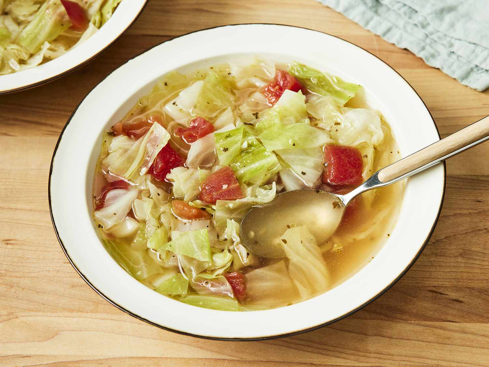

Healing Cabbage Soup

Description
My body craves this cabbage soup whenever I have a cold, but it's equally delicious on a cold winter's night.
It's so
easy to make; add extra vegetables, leftover chicken, or rice for a more substantial meal.
Ingredients
- 3 tablespoons olive oil
- ½ onion, chopped
- 2 cloves garlic, chopped
- 2 quarts water
- 4 teaspoons chicken bouillon granules
- 1 teaspoon salt, or to taste
- ½ teaspoon black pepper, or to taste
- ½ head cabbage, cored and coarsely chopped
- 1 (14.5 ounce) can Italian-style stewed tomatoes, drained and diced
Steps
- Sauté onion and garlic in olive oil in a large pot.
- Add water, chicken bouillon granules, and seasonings.
- Bring to a boil, then stir in cabbage. Cook until cabbage wilts.
- Add the tomatoes and simmer.